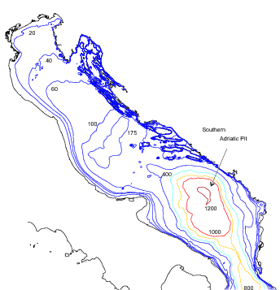
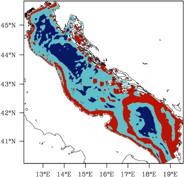

Bathymetry smoothing
The depth of many seas, particularly in the Adriatic Sea, has the inconvenience of varying too much for realistic oceanic modelling. The problem showed up in the computation of pressure difference in terrain following models. When the depths vary too much, artificial currents occur which compromise the stability of the model.


So, it is necessary to smooth the bathymetry in oceanic models, but one wants to use a bathymetry, which is as near as possible as the real one. We proposed a new linear programming method which performs much better than existing methods.
L M. Dutour Sikirić, I. Janeković, M. Kuzmić, A new approach to bathymetry smoothing in sigma-coordinate ocean models, Ocean Modelling 29 (2009) 128-136.